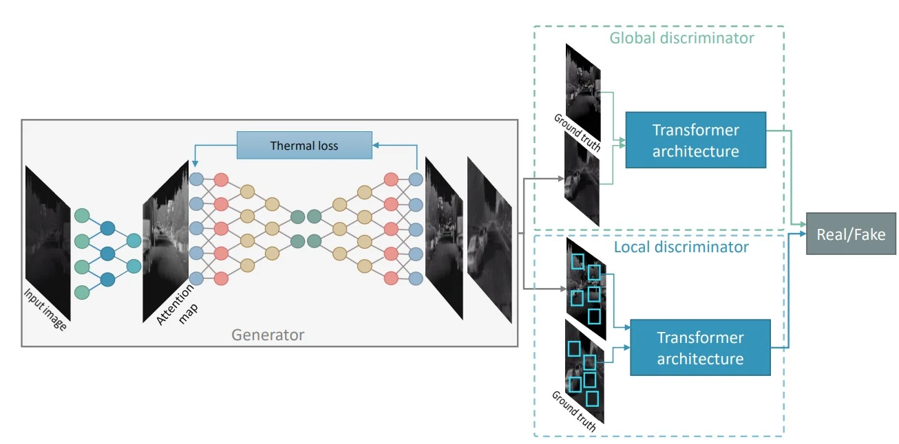

Thermal imaging is a crucial technology for security, surveillance, and autonomous driving, especially in low-light conditions. However, thermal images often suffer from low resolution, low contrast, and high noise. In this article, we explore how Generative Adversarial Networks (GANs) can be used to significantly enhance the quality of thermal imagery.
The Challenge with Thermal Images
Unlike visible light cameras, thermal cameras capture infrared radiation. This results in images that lack texture and color information. While they are excellent for detecting heat signatures, identifying specific objects or details can be difficult. Traditional image enhancement techniques often fail to preserve edges or introduce artifacts.
Enter GANs: Generative Adversarial Networks
GANs have revolutionized image-to-image translation tasks. By training a generator to create high-quality thermal images and a discriminator to distinguish them from real high-quality samples (or ground truth), we can learn complex mappings that restore details and reduce noise.
Our Approach: TE-GAN
In our research, we proposed TE-GAN (Thermal Enhancement GAN), a novel architecture designed specifically for this task. It consists of:
- Contrast Enhancement Module: Improves the dynamic range of the image.
- Denoising Module: Removes sensor noise while preserving features.
- Edge Restoration: A post-processing step to sharpen object boundaries.
The results show a significant improvement in both visual quality and the performance of downstream tasks like object detection.